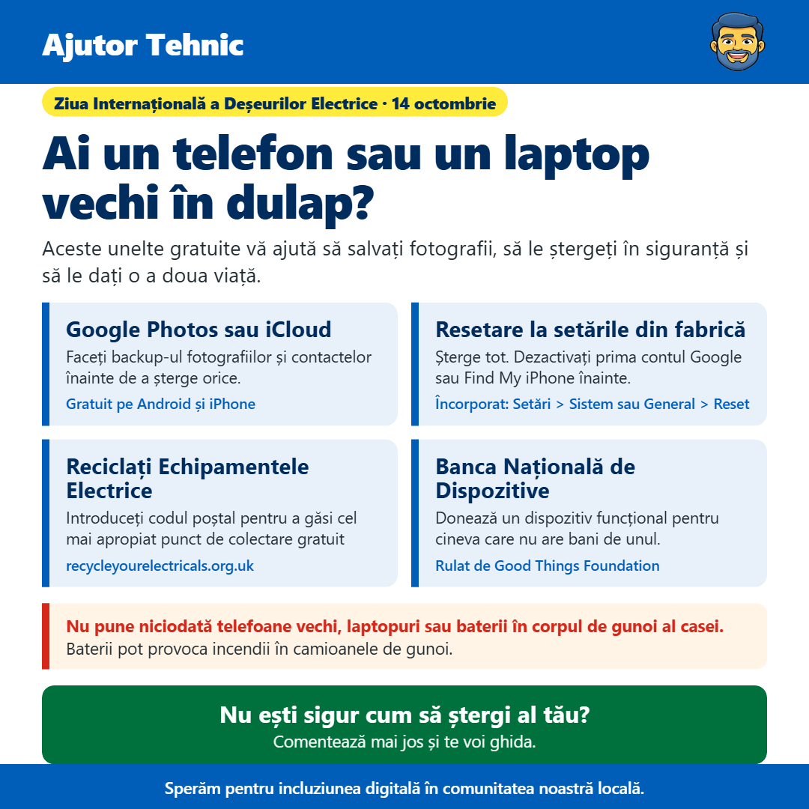

Ai un telefon sau un laptop vechi în dulap?
De la James Gartshore · · Tech zilnicPe scurt
- Google Photos sau iCloud: Backup-uie fotografii și contacte înainte de a șterge orice. (Gratuit pe Android și iPhone)
- Reset de fabrică: Șterge tot. Dezactivează-ți accesul de cont Google sau Find My iPhone mai întâi. (Încorporat: Setări > Sistem sau General > Reset)
- Reciclează Echipamentele Electrice: Introduce codul poștal tău pentru a găsi cel mai apropiat punct de colectare gratuit. (recycleyourelectricals.org.uk)
- Banca Națională de Dispozitive: Donează un dispozitiv funcțional pentru a ajunge la cineva care nu își poate permite unul. (Gestionat de Good Things Foundation)

Bună ziua tuturor, astăzi este Zi Internațională a Deșeurilor Electrice, o bună amintire despre toate telefoanele, tabletele și laptopurile vechi care stau în dulapuri. Majoritatea dintre noi avem cel puțin unul, iar mulți oameni le păstrează pentru că se tem că informațiile personale lor sunt în pericol sau nu știu ce să le faci cu ele. Există câteva unelte gratuite care fac acest lucru ușor.
Înainte de orice altceva, salvați fotografii și contactele. Google Photos pe Android și iCloud pe iPhone le vor păstra pentru voi, așa că vor fi acolo și pe noul vostru telefon. Puteți copia și pe acestea pe o memorie USB sau pe alt computer.
Fiecare telefon și laptop are o funcție de reset de fabrica încorporată, care șterge totul și îl returnează la starea în care era nou. Înainte de a folosi, deconectați-vă de conturi. Pe un iPhone, mergeți la Setări, apăsați numele dvs. în partea de sus și deconectați, ceea ce deconectează și funcția Find My iPhone. Pe Android, mergeți la Setări, apoi Conturi, și eliminați contul Google. Dacă săriți peste acest pas, dispozitivul rămâne blocat la dvs. și nimeni altcineva nu îl poate folosi. Apoi veți găsi reset-ul în Setări sub Sistem sau General, apoi Reset. Pe un laptop Windows, căutați Setări pentru "Reset this PC" și alegeți să eliminați totul. Nu uitați nici de a scoate cardul SIM și orice card de memorie.
Odatce este șters, site-ul gratuit Recycle Your Electricals la recycleyourelectricals.org.uk vă permite să introduceți codul poștal pentru a găsi cel mai apropiat punct de colectare, inclusiv magazine care iau tehnologie veche gratuit.
Dacă încă funcționează, puteți dona dispozitivul National Device Bank, gestionat de organizația de caritate Good Things Foundation. Ei reparați telefoanele, tabletele și laptopurile donate și le transferați oamenilor care nu își permit unul.
Fie ce faceți, vă rugăm să nu puneți telefoane, laptopuri sau baterii vechi în gunoiul de la domiciliu. Baterii din interior pot aprinde focul când sunt zdrobite în camioanele de gunoi și la centrele de reciclare.
Dacă nu sunteți sigur cum să ștergeți dispozitivul vechi, doar trim-mi un mesaj și voi face tot posibilul să vă ajut.
Sper că vă ajută, și nu ezitați să îl transmiteți oricui care ar putea să îl găsească util.